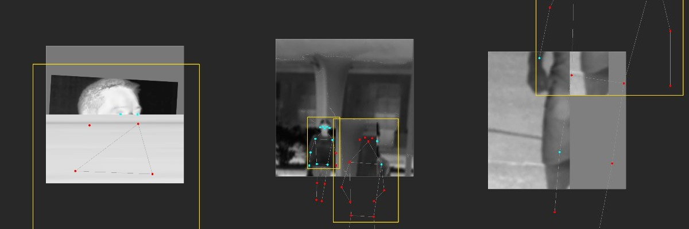
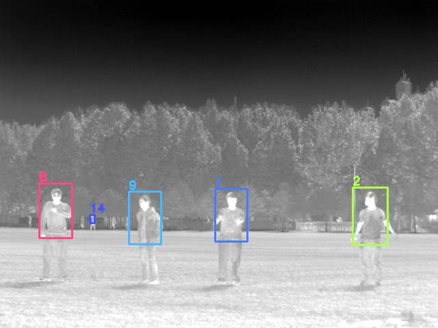

담당 범위
윤관
적외선 모델 학습경량화 · 최신 모델 조사+짐벌 추종 개선
데이터·학습FLIR 전이학습
자세·상체 모델
자세·상체 모델
→
경량화·M1증류 · INT8
두 NPU 분할
두 NPU 분할
→
추적 보완 모델외형 · 위치 예측
종단간
종단간
→
짐벌 추종튜닝 · 실측
지연 · 놓침 대응
지연 · 놓침 대응
학습한 모델을 M1에 올리고 짐벌 추종까지 개선했다
FLIR 검증 사람 60%가
키 32 px 미만
다시 나오면
번호가 바뀜
처음 M1에선
80%가 초과
빠른 이동·가림,
반응 약 0.2초 늦음
s급 · FLIR 학습 10,742장 · 30 epoch · seed 101 · FLIR 검증 1,144장 · PC float · 각 1회
AdamW · batch 8(64장마다 갱신) · seed 202 · RTX 4090 · 1회
FLIR 검증 1,144장 · 매 epoch EMA 가중치 평가 · RTX 4090(다른 학습과 공유) 2시간 2분 · 1회 · 세로축 40%부터
YOLO26s · seed 101 · FLIR 검증 1,144장 · 10%는 묶음 3개 평균
YOLO26s · seed 202 · 30 epoch · FLIR 검증 1,144장 · 6종 mAP50–95 · 규모별 1회
| 직접 학습 | 증류 | 변화 | |
|---|---|---|---|
| 오탐 | 321 | 295 | −26 |
| 놓침 | 526 | 535 | +9 |
| ID 바뀜 | 12 | 17 | +5 |
FLIR 학습 4,196장 · 60 epoch · seed 202 · 1회
| 데이터 | 쓰임 | 학습에 쓴 장수 |
|---|---|---|
| FLIR | 도로 열화상 · 검출기 | 10,491 |
| OTP2 | 근거리 열화상 자세 | 8,846 |
| COCO 흑백 | 다양한 자세 | 30,000 |
| MOT17 흑백 | 군중 가림 · 자동 관절 | 2,536 |
| LLVIP-Pose | 야간 중거리 사람 | 6,851 |
| 자체 카메라 | 현장 상체 모델 · 직접 검수 | 650 |


OTP2 학습 이미지의 실제 증강 출력 · 어두운 테두리는 화면 밖
시험 2,151장
검증 6편 · 야외 여러 명
TMOT 키 25–50 px · 박스 4,605개
학습·선택에 안 쓴 시험 · TMOT는 관절로 전신 박스 복원, 이후 추적 개발에도 사용 · FP32 1회


실제 편집 화면
위 그림은 개념도
자체 1,960 + 공개 1,954장 · F에서 8 epoch · 시험 각 1회 · PC
차이는 F 대비 · PC FP32 · 각 1회
이전 E10: 상체·전신 박스가 섞인 라벨로 학습 · 차이는 왼쪽 이전 E10, 오른쪽 현장 E10 대비 · PC 1회
E10은 시험 62장 중 61장을 학습에 써서 OTP2로 비교 · 실내 HOTA는 개발용 녹화
문제가려졌다 다시 나온 사람의 번호 지키기
SOLIDER 교사 → RepVGG 학생
장치 사용
Kalman 경로 + GRU 보정
장치 사용
기존 검출+추적보다 낮음
보류
장치 사용: 검수 264장으로
미세조정한 RepVGG
FLIR 3,749프레임 · 같은 검출·추적기 · PC FP32 · 1회
| 모델 | 크기 | NPU | OTP2 몸 | OTP2 가림 | 실내 몸 | 실내 가림 |
|---|---|---|---|---|---|---|
| ViT-lite 미세조정 | 1.46 MB | 5.03 ms | 0.616 | 0.592 | 0.989 | 0.903 |
| ViT-lite 증류 | 1.46 MB | 5.02 ms | 0.672 | 0.596 | 0.915 | 0.841 |
| RepVGG OTP2 (11/13) | 7.45 MB | 1.26 ms | 0.892 | 0.834 | 0.977 | 0.847 |
| RepVGG 검수 264 · 장치 | 7.45 MB | 1.28 ms | 0.764 | 0.667 | 1.000 | 0.892 |
1순위 정답 비율 · 장치 NPU · OTP2 60명 537질의 · 실내 176질의(학습 겹침 미확인)
| 시험 | 정확도 |
|---|---|
| TMOT 1순위 정답 | 386 / 432 · 89.4% |
| CAMEL 1순위 정답 | 201 / 218 · 92.2% |
| 추적 IDF1 · FLIR | 66.74% |
| 교사 SOLIDER로 교체 | 66.57% (−0.2%p) |
| 추적 IDF1 · 자체 녹화 9편 | 83.0% |
| SOLIDER 증류 E · 시험 선택지 | 82.4% (−0.6%p) |
TMOT·CAMEL은 개발에 쓴 공개 자료 · 추적은 PC FP32 · 녹화 9편은 라벨 있는 자체 녹화
학습: TMOT 24편 + DanceTrack의 검출 결과 · 같은 자리에 Mamba도 시험
자체 녹화 TEST 14편 · 놓침 238건 · PC 재생 · 원인 분석에 쓴 영상
PC 계산 · 실내 녹화 3편 · 자체 녹화 17편


사진: 같은 녹화의 다른 프레임 · IoU: 56장 190명, 모두 발목이 보인 경우
INT8 그래프 3개 · 보정 16장
장치에서 녹화 재생 채점 · 각 1회
YOLO26s · FLIR 시험 3,749장 · M1 INT8 · 같은 보정 · 각 1회
AP·시간: 11-06 FLIR 시험 3,749장 · INT8 640×640 · 학습 이력 다름 · 1회 │ 처리량: 11-03 저장 영상 · 출력 동일
운영 장치 · 상체 E10 · 30 FPS · 실카메라 11-20 1,800장 · 녹화 11-19 805·592장
FP32 진단 · 학습에 쓴 검수 264장 · 검수 264장 판 E10
운영 장치 · 상체 E10 분할 · 그래프는 사람 없는 구간, 전후 각 1,800장(첫 줄 약 3,250장) · 11-19~20
운영 장치 설정 · 11-15 이후 기록 · SPD = 짐벌 속도 단위
11-10 실제 짐벌 + 가상 표적 · 최고 속도 10 (운영은 100) · 설정당 1회
11-15 실제 짐벌·카메라 · 가로(팬)만, 세로 미측정 · 추종 없이 직접 명령 · SPD별 2~3회
장치에서 실행 · 11-15~16 · 확대한 녹화라 실제 근거리와는 다름
출발할 때 더 빨리 가속
화면 가장자리 80 px에서만 가속
PC 모의 시험 · 실측 짐벌 모형(팬, SPD 10~30)
11/15 장치 점검 · 전후는 가상 직렬·카메라 기록 · 실제 짐벌 종단 지연 미측정
| 방법 | 시험 | 결과 | 장치 |
|---|---|---|---|
| 예측 자리 따라가기0~0.8초 | 가상 비교 | 재포착 +20%p · 켠 방식은 +6%p | 켬 |
| 외형으로 다른 사람 막기 | 가상 2회 | 판단 불가 | 켬 |
| 좌우로 훑기 | 가상 24회 | 다른 사람으로 넘어감 +11%p | 끔 |
| 예측 쪽으로 넓게 훑기 | 가상 2차례 193회 | 재포착 −7%p · −13%p | 끔 |
| 예측 주변 좁게 보기0.8~3.6초 | 기능 시험 | 재포착 미측정 | 켬 |
| 가려지면 아래로 안 내림 | 기능 시험 | 미측정 | 켬 |
| 따라가던 사람 번호 되돌리기 | 운영 중 복구 3건 | 맞는 사람인지 미검수 | 11/20 빠짐 |
가상 = 녹화를 확대한 화면으로 하는 장치 시험 · 장치 상태 11/20 기준